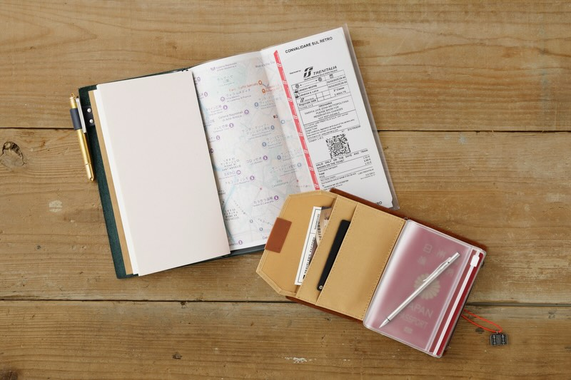
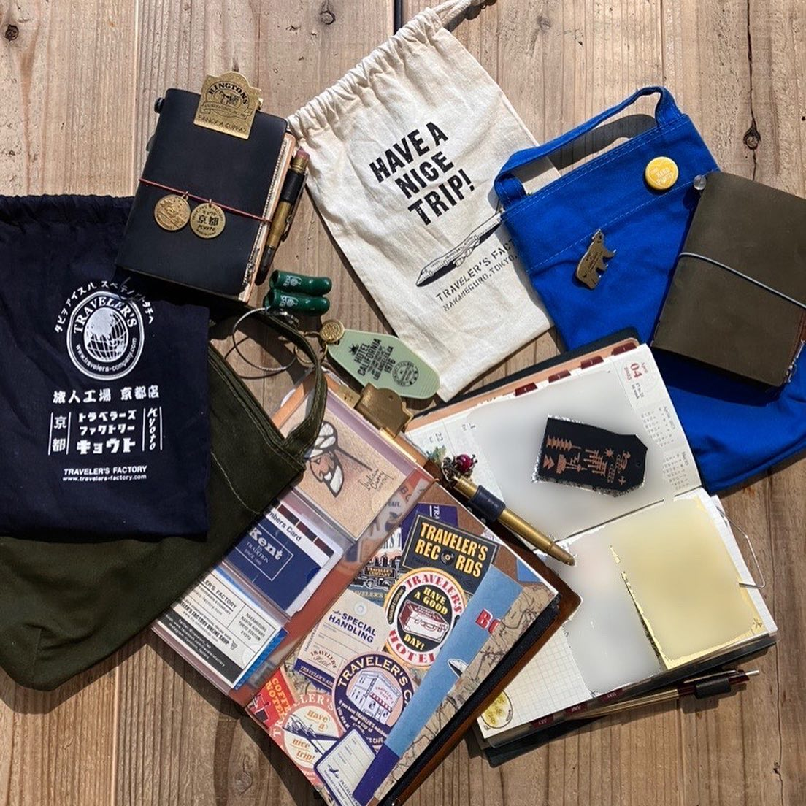
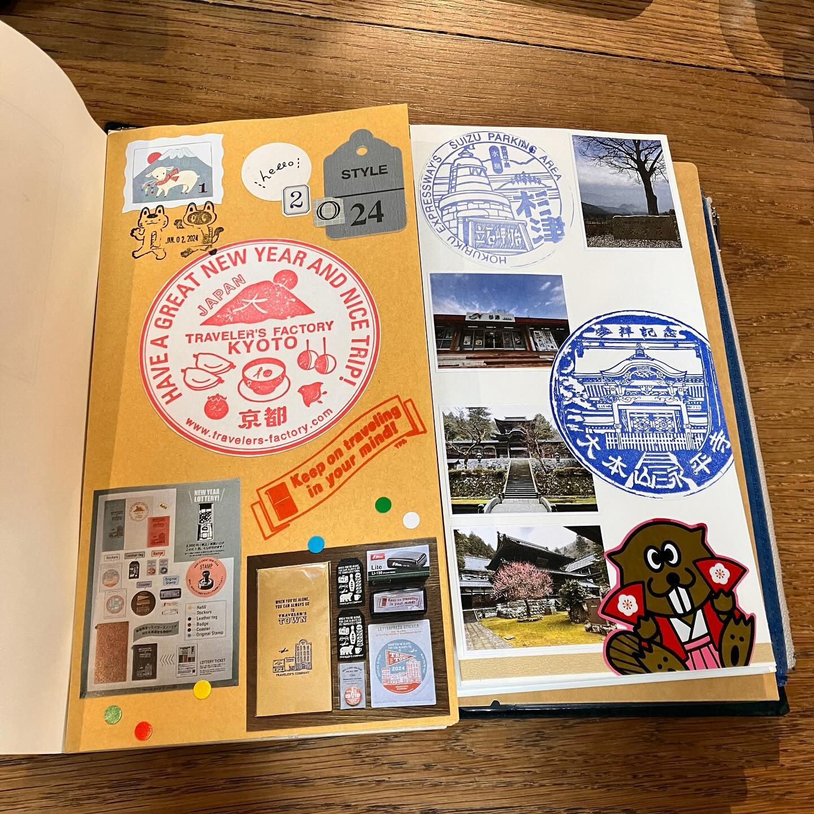
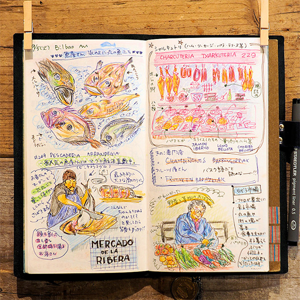
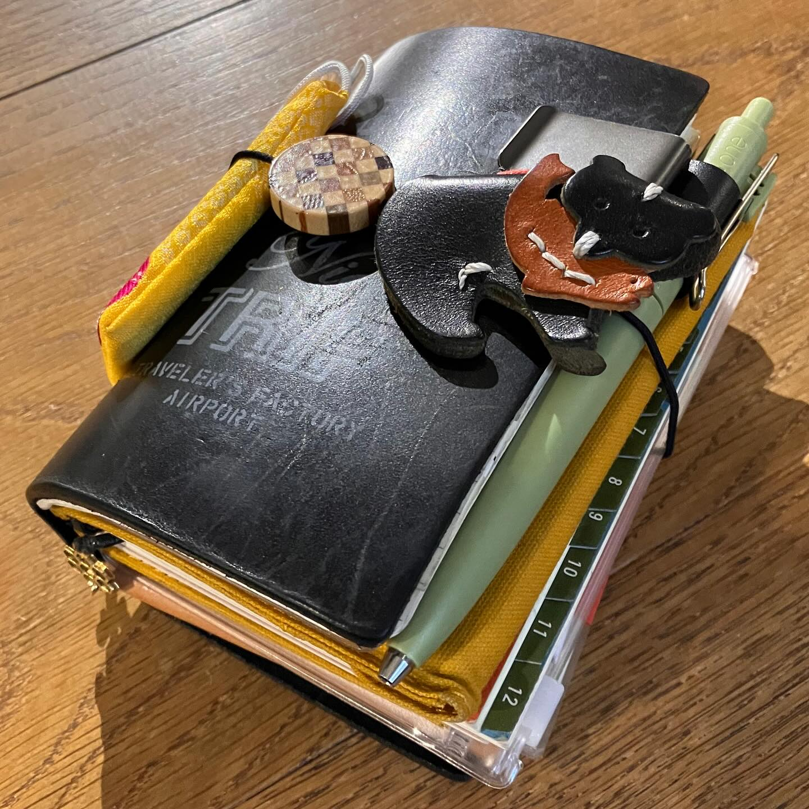
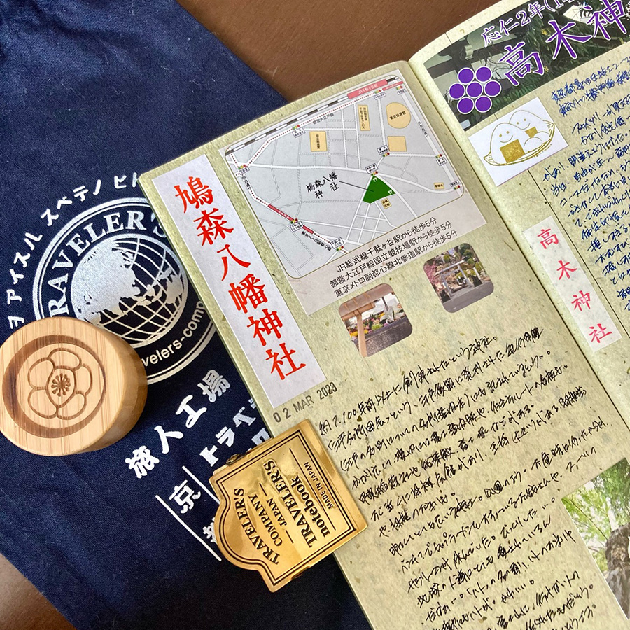
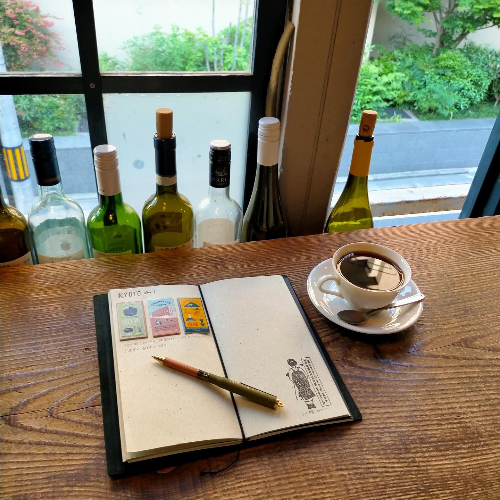

有些东西，是为了让我们把生活安排得更好。
有些东西，却会让我们想离开熟悉的地方。
一本地图。
一张车票。
一台相机。
还有一本可以随身携带的笔记本。
旅行的时候，我们总会带走一些东西。
但真正留下来的，
往往不是照片本身，
而是那些写在纸上的小小记录。
TRAVELER'S COMPANY 是来自日本的旅行与生活方式品牌，以 TRAVELER'S notebook 为核心，鼓励人们通过旅行、书写与创作，记录属于自己的故事。
它并不要求一本笔记本永远保持整洁。
相反，
使用留下的痕迹，
本身就是它的一部分。
A Notebook for the Journey
旅行的意义，
有时候并不只是抵达某个地方。
而是在路上的时候，
慢慢发现自己。
TRAVELER'S notebook 没有试图替你决定应该记录什么。
你可以写下：
今天去了哪里。
遇见了谁。
看到的一间小店。
一张车票。
一张地图。
一句突然想到的话。
甚至只是：
「今天的天气很好。」
它留下的不是标准答案，
而是一个可以属于自己的空间。

① Made to Travel
旅行中的东西，
通常需要满足一个很简单的条件：
TRAVELER'S notebook 的设计并不复杂。
一个皮革封套，
一条橡皮筋，
以及可以自由替换的内芯。
你可以根据自己的旅程，决定里面应该放什么：
旅行记录、空白纸、日程、地图，
甚至照片和车票。
不同的内芯，可以随着旅程和生活不断更换，
让一本笔记本适应不同的使用方式。
它不像一本已经完成的书。
更像一本正在旅途中慢慢被写出来的书。
而它的尺寸，也让它很适合随身携带。
地图、车票、收据或旅行途中偶然得到的小纸片，
都可以暂时夹在其中。
所以我觉得，TRAVELER'S notebook 最有趣的地方之一，
是它并不是让你：
而是让笔记本本身，
成为旅行的一部分。
TRAVELER'S COMPANY 官方也特别强调， 皮革封套会随着使用逐渐产生变化， 而这些变化会成为使用者自己的记忆。
皮革封套在泰国清迈制作，
内部 notebook 则在日本制作，
并使用为书写体验而开发的 MD Paper。
不同地方、不同材料与不同工艺，
被放进同一本 notebook 里。
它们最后共同指向的，却是同一件事：

② A Notebook That Becomes Yours
同一本 TRAVELER'S notebook，
到了不同人的手里，
可能会变成完全不同的样子。
有人把它当作旅行日记。
有人记录电影、阅读和日常生活。
有人贴上车票、明信片和杂志剪报。
有人画画，也有人只是写下每天想到的事情。
你甚至可以通过贴纸、吊饰、印章等方式，
让封面和内页慢慢变成自己的样子。
反而把决定权留给了使用者。
这也是我很喜欢它的地方。
它不是一个已经完成的设计，
而是一个等待你参与完成的空间。

When a Notebook Becomes a Studio
TRAVELER'S COMPANY 曾分享过一些使用者的故事。
有人把它当成随身工作室，记录草图、照片、诗句和创作过程； 有人把孩子的照片、旅行记忆与工作想法放在同一本 notebook 里； 也有人因为开始收集旅行中的纸片和票据， 而重新发现了记录与拼贴的乐趣。
其中一个很打动我的，是有人将一次探望祖母的旅程记录在 notebook 里：
车票、旅途中拍下的照片、车站便当的包装、 神社的参拜印章，以及与家人的照片， 都被留在同一本笔记里。
它最后保存下来的， 已经不只是「去了哪里」。
而是那一次旅程里发生过的许多微小瞬间。
这让我觉得：
不是因为它被买下来，
而是因为它开始记录属于那个人的生活。

③ The Beauty of Things That Age
我们通常希望东西保持全新。
但 TRAVELER'S notebook 好像恰好相反。
它并不害怕被使用。
皮革会变软。
颜色会慢慢改变。
表面会出现划痕。
边缘也会留下使用过的痕迹。
但这些变化，并不会让它失去原本的美感。
反而会让它越来越像：
这也是 TRAVELER'S notebook 和普通笔记本很不一样的地方。
一本新的 notebook，最开始属于品牌。
但使用一年以后，
它可能已经属于你。
那些划痕、折痕和颜色变化，
并不是制造时就设计好的装饰。
它们来自你真正使用它的过程。
而内页保存下来的东西也是一样。
一张旧车票。
一张咖啡店的收据。
某个城市买来的贴纸。
旅行途中写下的一句话。
这些东西单独看，也许都很普通。
但当它们一起留在一本 notebook 里，
它们就成为了一段只有你知道的故事。
所以，TRAVELER'S notebook 的「旧」并不是损耗。
而是一种记录时间的方式。
也许几年以后，当你再次打开它，
你看到的已经不只是一件用了很久的物品。
而是：

More Than a Souvenir
旅行结束以后，
我们通常会带回来一些纪念品。
但有时候，
最珍贵的东西并不是买回来的。
而是凌晨写下的一句话，
车站里等待列车的十分钟，
陌生城市的一杯咖啡，
迷路时随手画下的一张地图。
还有那个时候，
正在旅行的自己。
旅行本身总会结束。
但这些微小的东西，
可以让某一个瞬间继续留在未来。
TRAVELER'S notebook 做的，
也许就是给这些记忆一个可以回去看看的地方。

Why Soft Archive Collects It
一本真正属于自己的笔记本，最后保存下来的， 也许不是旅行去了哪里， 而是那段旅程里，我们成为了怎样的人。
A Small Detail I Love
一开始，它只是一件刚买来的物品。
但当你一次又一次把它带出门， 它会慢慢留下属于你的痕迹。
划痕、颜色变化、折痕， 以及里面一张张被保存下来的纸片。
所以最后，你手里的已经不再只是「TRAVELER'S notebook」。
而是一本只有你才能真正拥有的东西。
What Caught My Attention
- 它没有试图隐藏使用痕迹。 皮革的划痕、颜色变化与折痕， 反而成为一本 notebook 的一部分。
- 官方摄影经常展示 notebook 正在被使用的状态， 而不只是单纯展示商品。
- 旅行、咖啡馆、地图、照片、车票与手写文字， 经常自然地出现在视觉中。
- 使用者可以自由组合 refill、贴纸、照片和其他纸质物品， 让每一本 notebook 都拥有不同的样子。
- 我特别喜欢它没有要求使用者保持整洁或完美， 而是允许生活留下痕迹。
Signature Piece
一个简单的皮革封套， 加上可以自由替换的 notebook refill。
它最特别的地方，并不是第一次打开时有多漂亮， 而是使用很久以后， 你会发现它已经变成了一件只有自己才能真正定义的物品。
The more you use it, the more it becomes yours.

Journey | 旅程
Leather Brown
Archive Information
| Country | Japan |
| Location | Tokyo |
| Founded | 2006 — TRAVELER'S notebook launched |
| Category | Travel & Stationery |
| Materials | Leather · MD Paper · Cotton |
TRAVELER'S notebook 于 2006 年推出；2015 年， 品牌从原本的 MIDORI 转变为 TRAVELER'S COMPANY， 继续围绕「traveling in one's daily life」展开品牌理念。
Who It's For
- ✈️ 喜欢旅行和探索的人
- 📖 喜欢记录生活的人
- 🎨 喜欢自由创作和拼贴的人
- 👜 喜欢随身携带一些东西的人
- 🤎 喜欢会随着时间改变的物品的人
- 📮 喜欢保存车票、明信片和旅行纪念物的人
Soft Archive Note
有些旅程结束以后，真正留下来的不是目的地， 而是那个曾经出发、曾经在路上的自己。
TRAVELER'S notebook 让我想到， 记录并不是为了把每一件事情都保存下来。
而是给未来的自己， 留下一扇可以回去看看的门。
也许很多年以后，当我们再次翻开它， 真正想念的并不是那座城市。
而是当时那个还不知道未来会发生什么， 却依然愿意出发的自己。
Sources
This archive is an independent editorial project by Soft Archive. Product names, trademarks and images belong to their respective owners. Soft Archive is not affiliated with TRAVELER'S COMPANY.
More quiet things worth keeping.
Return to the archive and discover another ordinary thing, another small detail, another story.
Explore the Archive →